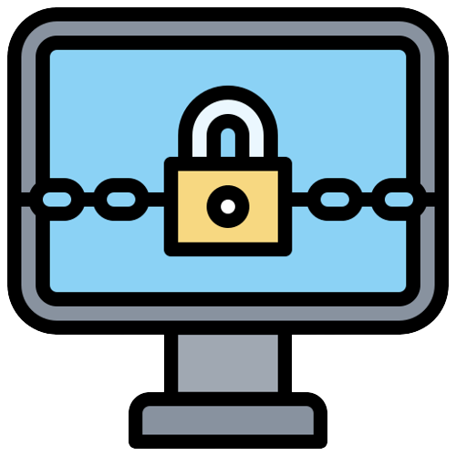

4. Ransomware
Ransomware is a type of malicious software (malware) that encrypts a user's files or locks them out of their computer, making the data inaccessible until a ransom is paid to the attacker. It is a form of cyber extortion, where the attacker demands payment from the victim in exchange for providing the decryption key or unlocking the system. Ransomware encrypts a user's files and demands a ransom payment in exchange for the decryption key. It can severely disrupt businesses and individuals by making their files inaccessible.
Here's how ransomware typically operates:
1. Infection: Ransomware can infect a computer through various means, including malicious email attachments, compromised websites, fake software updates, or infected downloads. Once the ransomware gains access to the system, it starts encrypting files or locking the user out of their computer.
2. Encryption: The ransomware encrypts the victim's files using strong encryption algorithms. This process renders the files unreadable without the decryption key, which is held by the attacker.
3. Ransom Demand: After encrypting the files, the ransomware displays a ransom note on the victim's screen, explaining that their files are locked, and they must pay a specified amount of money (usually in cryptocurrencies) to obtain the decryption key. The ransom note often includes instructions on how to make the payment and may include threats of permanent data loss or increased ransom if the payment is not made within a specific timeframe.
4. Payment and Decryption: If the victim decides to pay the ransom, they provide the payment to the attacker. In some cases, the attacker will then send the decryption key to the victim, allowing them to unlock their files. However, paying the ransom does not guarantee that the attacker will uphold their end of the bargain, and there have been instances where victims paid the ransom but did not receive the decryption key or encountered other issues.
Ransomware attacks can have severe consequences for individuals and businesses. It can lead to data loss, financial losses, and significant disruptions to operations. Some ransomware variants may also steal sensitive data before encrypting it, threatening to expose the information publicly if the ransom is not paid, creating additional pressure on the victim to comply with the attacker's demands.
To protect against ransomware, it's essential to maintain up-to-date backups of important data, use reputable antivirus and anti-malware software, exercise caution when opening email attachments or clicking on links from unknown sources, and keep operating systems and software patched and updated. Additionally, organizations should implement security measures like network segmentation, strong access controls, and security awareness training for employees to prevent and mitigate ransomware attacks.
5. Spyware
Spyware is a type of malicious software (malware) that secretly monitors and gathers information about a user's activities on a computer or device without their knowledge or consent. It is designed to spy on the user, track their online behavior, and collect sensitive information, which is then transmitted back to the attacker or third-party for various purposes, often with malicious intent. Spyware is designed to gather information without the user's knowledge. It can monitor activities, collect sensitive data, and send it to the attacker.
Spyware can perform a range of intrusive activities, including:
1. Keylogging: Recording keystrokes to capture passwords, credit card numbers, and other sensitive data entered by the user.
2. Screen Capture: Taking screenshots of the user's activities, including personal information or private messages.
3. Web Browsing Tracking: Monitoring internet browsing habits and collecting data about the websites visited.
4. Data Harvesting: Gathering personal information such as names, addresses, email addresses, and phone numbers.
5. Ad Tracking: Tracking user behavior for targeted advertising purposes.
6. System Monitoring: Monitoring application usage, system settings, and software installations.
Spyware often operates stealthily to avoid detection and removal. It can be distributed through various means, including malicious email attachments, infected websites, freeware or shareware bundles, and fake software updates.
The collected data is typically used for malicious purposes, such as identity theft, blackmail, unauthorized access to financial accounts, or selling the information to third parties for profit. In some cases, spyware may be used by governments or law enforcement agencies for surveillance purposes, raising concerns about privacy and civil liberties.
To protect against spyware and other forms of malware, users should:
1. Use reputable antivirus and anti-spyware software and keep it up-to-date.
2. Be cautious when downloading software from unknown sources.
3. Avoid clicking on suspicious links or opening email attachments from untrusted senders.
4. Keep operating systems and software patched and updated to address known vulnerabilities.
5. Use strong and unique passwords for online accounts.
Regularly review app permissions and privacy settings on devices.
By following these best practices and being vigilant about potential threats, users can reduce the risk of spyware infections and protect their privacy and sensitive information.